Chapter
7: Maintenance
Maintenance is one of the menu selections
in the menu bar that can be accessed by either clicking upon "Maintenance"
in the menu bar or pressing Meta+M. Its function is to calculate and display
an estimate of the effort and cost necessary to maintain a post development
software product for a user-defined number of years (maximum five years).
Maintenance encompasses the process of modifying existing operational software
while leaving its primary functions intact. This process excludes the following
types of activities:
Major re-design and re-development (more
than 50% new code) of a new software product performing substantially the
same functions
Design and development of a sizeable (more
than 20% of the source instructions comprising the existing product) interfacing
software package which requires relatively little redesigning of the existing
product
Data processing system operations, data
entry, and modification of values in the database
Maintenance does include the following
types of activities:
Re-design and re-development of small
portions of an existing software product
Design and development of small interfacing
software packages, which require some redesign of the existing software
product
Modification of the software product's
code, documentation, or database structure
Maintenance effort and costs are determined
by essentially the same cost driver attributes used to determine the software
development costs and effort (exceptions are the RELY, SCED and MODP factors
which will be discussed in greater detail later in this chapter). The maintenance
calculations are heavily based upon the Maintenance change Factor (MCF)
and the Maintenance Adjustment Factor (MAF). The MCF is similar to the
Annual change Traffic in COCOMO81, except that maintenance periods other
than a year can be used (see EQ 7-1).
Maintenance Change Factor (EQ
7-1)
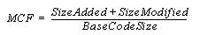
The initial maintenance size is obtained
in one to two ways. The first equation in EQ 7-2 is used when the base
code size is known and percentage of change to the base code is known.
The second equation in EQ 7-2 is used when the fraction of code added or
modified to the existing base code during the maintenance period is known.
Initial Maintenance Size(EQ
7-2)
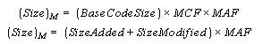
As shown in EQ 7-2, the initial maintenance
size estimate is adjusted with a Maintenance Adjustment Factor (see EQ
7-3).
Maintenance Adjustment Factor(EQ
7-3)
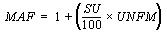
The resulting maintenance effort estimation
formula is the same as the COCOMOII Post Architecture development model
(see EQ 7-4).
Maintenance Effort(EQ
7-4)
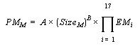
As stated previously, three cost drivers
for maintenance differ from development. Those cost drivers are software
reliability (RELY), modern programming practices (MODP) and schedule (SCED).
The reason for the change in MODP, RELY is that increased investment in
software reliability and use of modern programming practices during software
development have a strong positive effect upon the maintenance stage. The
SCED attribute is controlled by the number of years value entered by the
user. As a result the SCED driver is no longer editable in the EAF window,
but is calculated from the user inputted value for number of years when
the maintenance function is engaged. For more information on these cost
drivers please refer to the introduction of this manual.
The Maintenance menu option offers
sub-menu for either a maintenance effort estimation upon either an entire
project or an individual module (see Figure 7-1). These separate options
are discussed in section 7.1 and 7.2.
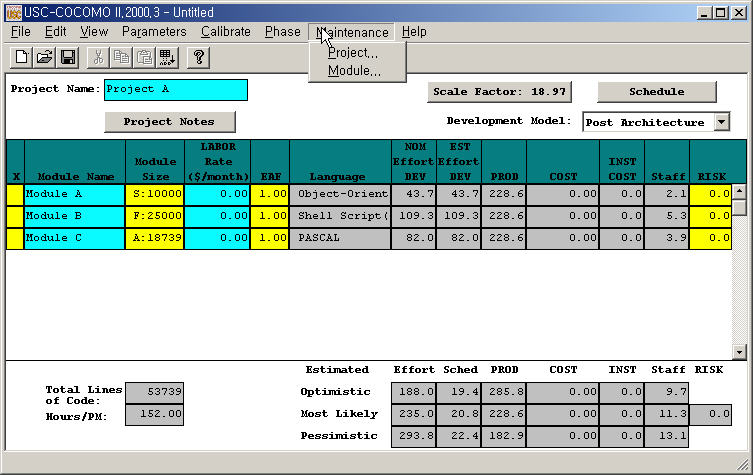
FIGURE 7-1 Maintenance sub-menu
7.1 Project
Maintenance
In order to view the maintenance estimation
calculations for an entire project, the user can click on Project under
the Maintenance menu (see Figure 7-1). Upon clicking upon this selection
a window will appear displaying the current project name, an EAF button,
an editable labor rate field, editable number of years of maintenance field,
an editable percent of added source instructions field per year of maintenance
and an editable percent of modified source instructions field per year
of maintenance (see Figure7-2).
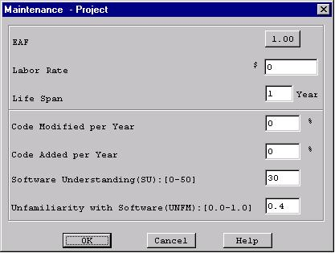
FIGURE 7-2 Project Maintenance Dialog Box
The EAF rate can be changed by clicking
upon the corresponding button. This action will result in the appearance
of an EAF dialog box where the cost driver ratings can be changed as described
in the introduction (see Figure 7-3).
Upon completing the adjustment of the
cost drivers click the OK button or click the Cancel button to return to
the CLEF without viewing maintenance estimations.
After exiting the EAF dialog box, you
will be returned to the Project Maintenance Dialog box to continue inputting
the editable values.
Click upon the OK button upon completion
of editing the displayed fields or click upon the Cancel button if no changes
are desired to the default values (if more assistance, the Help button
is available to receive on-line assistance).
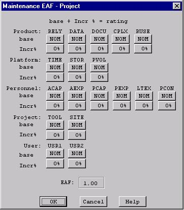
FIGURE 7-3 Project Maintenance
EAF Dialog Box
When the OK button is clicked in the Project
Maintenance Dialog Box, a window displaying the first of four pages that
contains the project name, the current development mode, the total number
of source instructions for development of the project (EDSI) that is loaded
in the CLEF, the nominal effort of the project, the actual effort of the
project, the development cost, the inputted maintenance labor rate, the
inputted percent of code added during maintenance per year, the inputted
percent of code modified during maintenance per year (see Figure 7-4) and
the calculated annual change traffic.
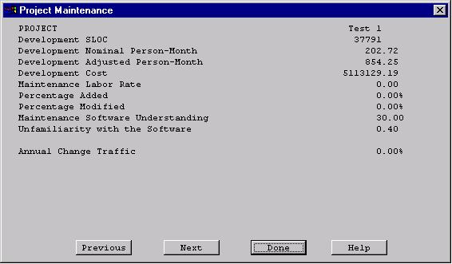
FIGURE 7-4 Project
Maintenance window (page 1)
The second page of the maintenance window
can be seen by clicking upon the Next button. It contains the settings
for the 16 cost drivers, SCED is not applicable (see Figure 7-5).
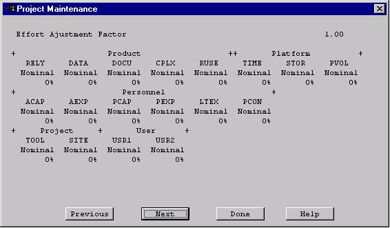
FIGURE 7-5 Project Maintenance
window (page 2)
The third page of the maintenance window
contains the effort and cost estimation for the next N number of years
(as defined by the user). With each year is listed the KDSI (EDSI * 103),
the nominal effort for development (PM nom), the actual effort for maintenance
(PM maint), the number of full time software personnel necessary to maintain
the project for the year (FSWP), the number of instructions that are to
be maintained be per personnel(KDSI/FSWP) and the total cost for maintenance
for the year (see Figure 7-6).
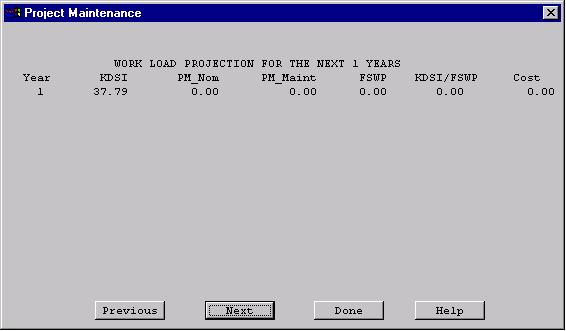
FIGURE 7-6 Project
Maintenance window (page 3)
The fourth window of the maintenance window
contains the cumulative figures for effort and cost for maintenance for
the total number of years (see figure 7-7). This first displays the total
number of effort estimated for maintenance, then sums the effort of development
and maintenance together. It also displays the total cost of maintenance
of the project and then displays the summed total cost of development and
maintenance for the entire project.
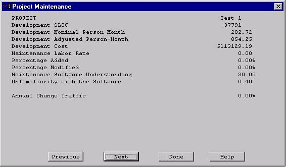
FIGURE 7-7 Project
Maintenance window (page 4)
Note - Each individual page can be seen
by cycling through the pages pressing either the Previous or Next buttons
as needed.
7.2 Module
Maintenance
In order to view the maintenance estimation
calculations for an entire module, the user can click on Module under the
Maintenance menu (see Figure 7-1). Upon clicking upon this selection a
window will appear displaying the current module names. Choose only one
of the modules by highlighting the appropriate module name and then clicking
upon OK (see Figure 7-8).
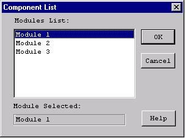
FIGURE 7-8 Module Selection window
Upon exiting the module selection window,
another window will be appear that displays, the selected module name,
an EAF button, an editable labor rate field, editable number of years of
maintenance field, an editable percent of added source instructions field
per year of maintenance and an editable percent of modified source instructions
field per year of maintenance (see Figure 7-9).
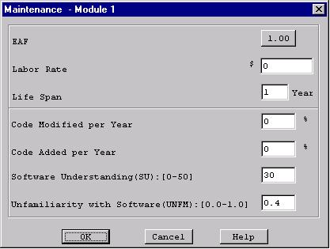
FIGURE 7-9 Module Maintenance Dialog Box
The EAF rate can be changed by clicking
upon the corresponding button. This action will result in the appearance
of an EAF dialog box where the cost driver ratings can be changed as described
in the introduction (see Figure 7-10).
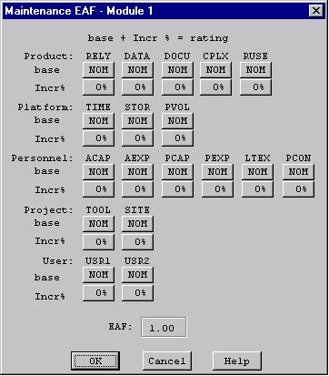
FIGURE 7-10 Module Maintenance EAF Dialog Box
Upon completing the adjustment of the
cost drivers click the OK button or click the Cancel button to return to
the CLEF without viewing maintenance estimations.
After exiting the EAF dialog box, you
will be returned to the Module Maintenance Dialog box to continue inputting
the editable values.
Click upon the OK button upon completion
of editing the displayed fields or click upon the Cancel button if no changes
are desired to the default values (if more assistance, the Help button
is available to receive on-line assistance).
When the OK button is clicked in the
Module Maintenance Dialog Box, a window displaying the first of four pages
that contains the module name, the current development mode, the total
number of source instructions for development of the module (EDSI) hat
is loaded in the CLEF, the nominal effort of the module, the actual effort
of the module, the development cost, the inputted maintenance labor rate,
the inputted percent of code added during maintenance per year, the inputted
percent of code modified during maintenance per year (see figure 7-11)
and the calculated annual change traffic.
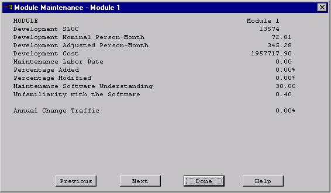
FIGURE 7-11 Module
Maintenance window (page 1)
The second page of the maintenance window
can be seen by clicking upon the Next button. It contains the settings
for the 16 cost drivers, SCED is not applicable (see Figure 7-12).
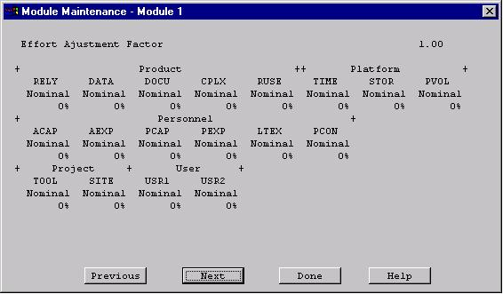
FIGURE 7-12 Module Maintenance
window (page 2)
The third page of the maintenance window
contains the effort and cost estimation for the next N number of years
(as defined by the user). With each year is a listed the KDSI (EDSI * 103),
the nominal effort for development (PM nom), the actual effort for maintenance
(PM maint), the number of full time software personnel necessary to maintain
the module for the year (FSWP), the number of instructions that are to
be maintained be per personnel(KDSI/FSWP) and the total cost for maintenance
for the year (see Figure 7-13).
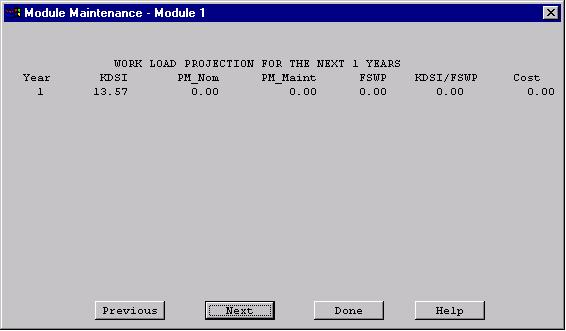
FIGURE 7-13 Module Maintenance
window (page 3)
The fourth window of the maintenance window
contains the cumulative figures for effort and cost for maintenance for
the total number of years (see Figure 7-14). This first displays the total
number of effort estimated for maintenance, then sums the effort of development
and maintenance together. It also displays the total cost of maintenance
of the module and then displays the summed total cost of development and
maintenance for the entire module.
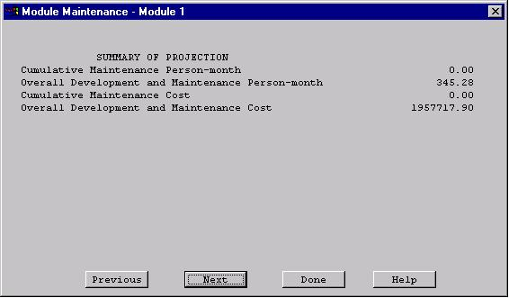
FIGURE 7-14 Module Maintenance
window (page 4)
Note - Each individual page can be
seen by cycling through the pages pressing either the Previous or Next
buttons as needed.